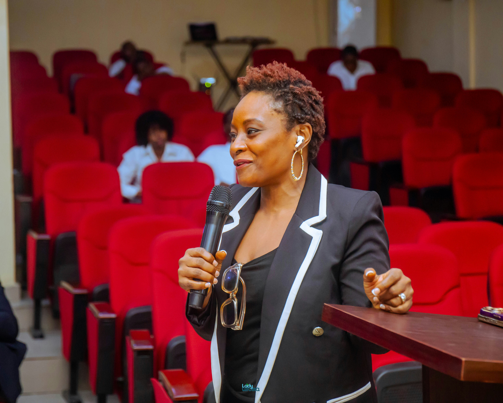
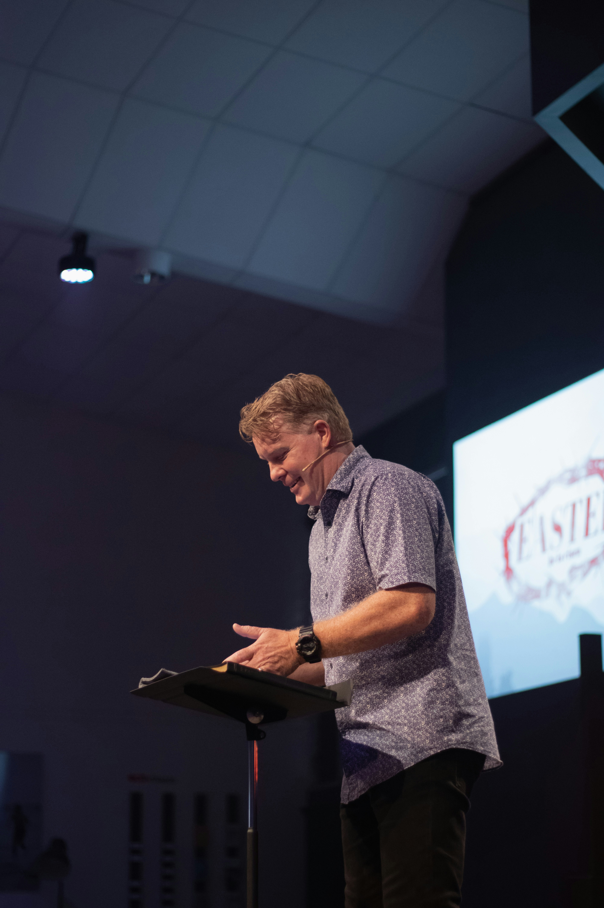
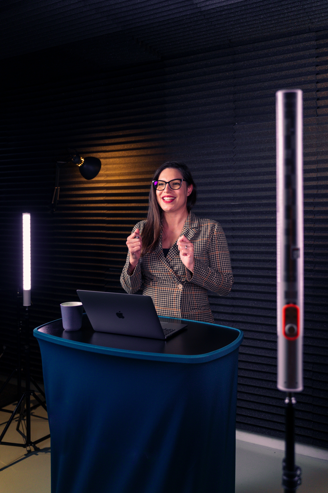
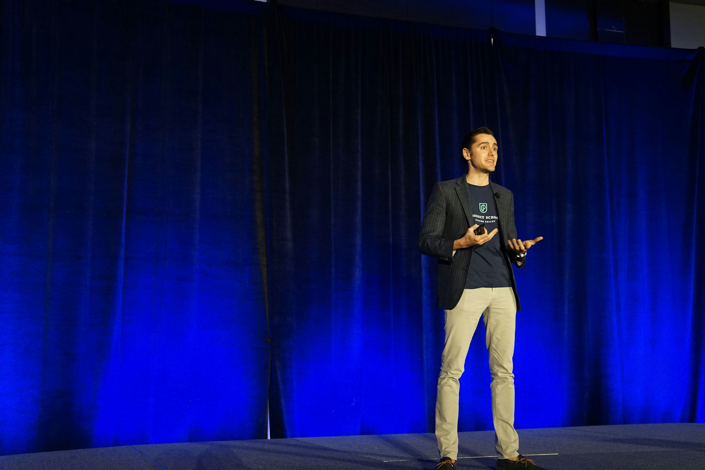
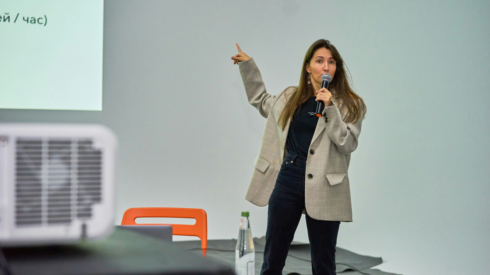
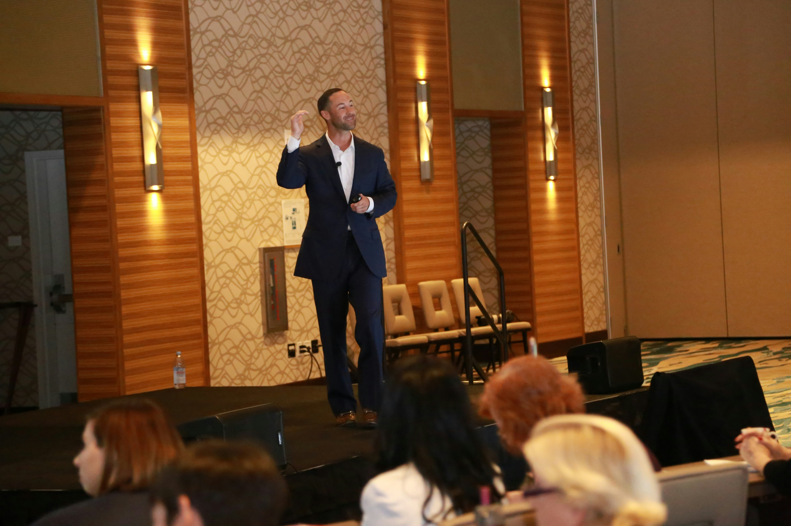

Ana Torres
Escritora y novelista
Autora de narrativa contemporánea y participante en encuentros dedicados a la creación literaria y al desarrollo de nuevos autores.
Letras 2026
Escritores, editores y profesionales de la creación comparten experiencias, ideas y herramientas alrededor de la literatura contemporánea.

Escritora y novelista
Autora de narrativa contemporánea y participante en encuentros dedicados a la creación literaria y al desarrollo de nuevos autores.

Editor
Especializado en nuevos autores y en los procesos editoriales que llevan un manuscrito desde su primera revisión hasta la publicación.

Poeta
Participa en proyectos de poesía contemporánea y coordina talleres orientados a la experimentación con nuevas formas de expresión escrita.

Guionista
Trabaja sobre construcción de personajes, estructuras narrativas y adaptación de historias a diferentes formatos audiovisuales.

Periodista cultural
Analiza la actualidad editorial, las nuevas tendencias literarias y las formas actuales de publicación y difusión de contenidos.

Profesor de escritura
Imparte talleres de escritura creativa centrados en técnicas narrativas, construcción de relatos y desarrollo de una voz literaria propia.